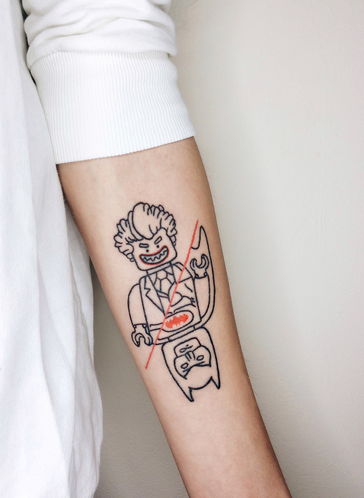
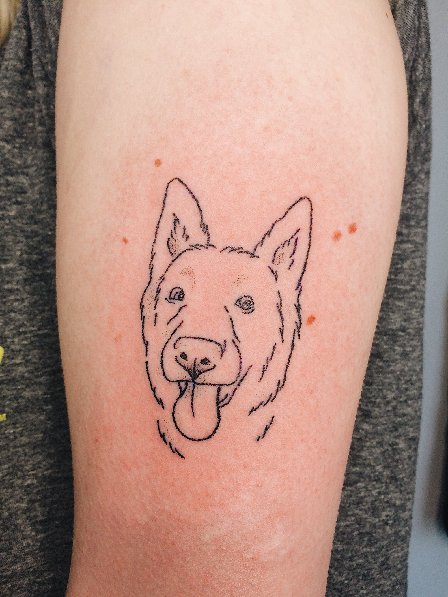
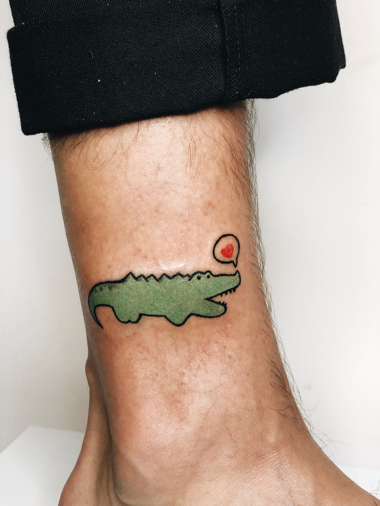

Я працюю без тату-машинки в техніці хендпоук ❤
Лайнворк
Дотворк
Кольорові тату
Чому я вибрала саме хендпоук? Бо цей процес для мене максимально медитативний, позбавлений будь-якого автоматизму, бо турбуватися про кожну крапочку, аби разом вони створили ідеальну лінію – кайф!